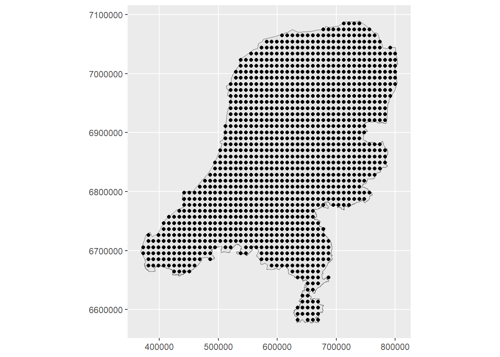
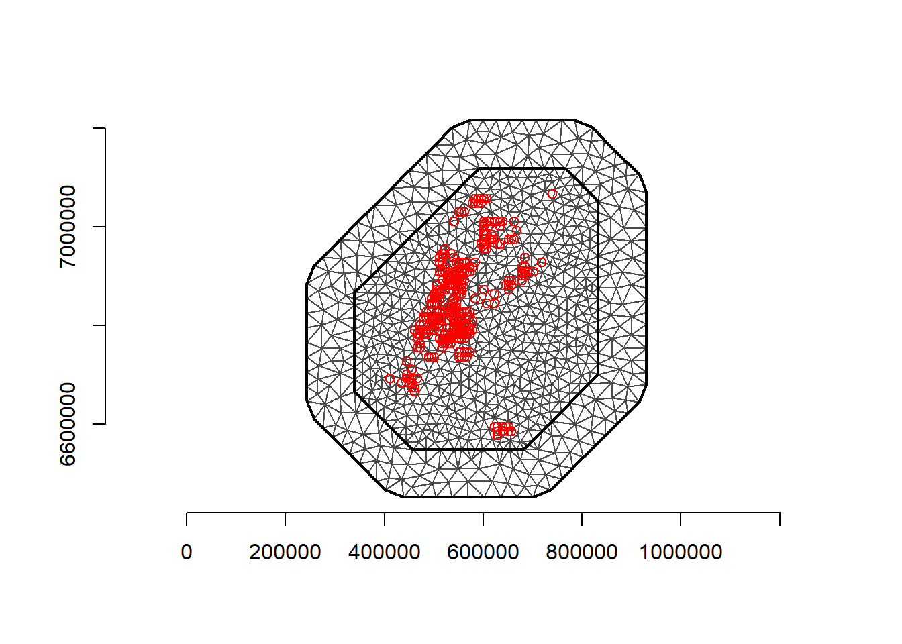
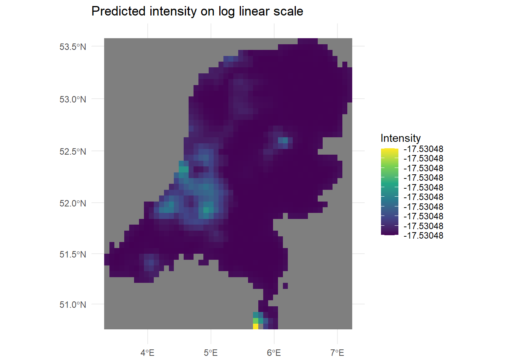
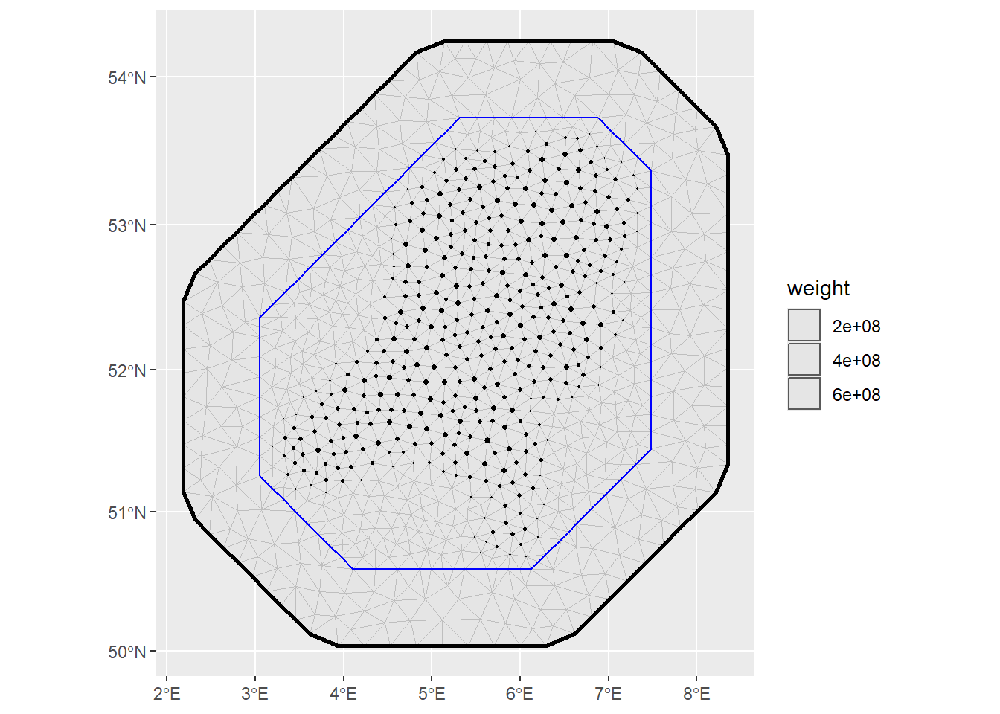

library(INLA)
library(inlabru)
library(sf)
library(ggplot2)
library(viridis)
library(terra)
library(dplyr)
library(readr)
library(rasterVis)4 Implementation of LGCP in INLA and INLABRU
4.1 LGCP in INLA
Having completed air pollution modelling in INLA and inlabru, it is time to move on to the LGCP and the point process model. A couple of online resources about point process modelling in INLA include: https://becarioprecario.bitbucket.io/spde-gitbook/ch-stapp.html#sec:burkitt and https://www.paulamoraga.com/book-spatial/point-process-modeling.html. I’ll again be relying on the Moraga book for template code.
The model fit here has intensity specified as \[ \lambda(s) = \beta_0 + f(s) \] Here I only use an intercept and spatial field to model the intensity, so we won’t have to worry about downloading any covariates.
Now for the data. I’ll use butterfly data from citizen science observations made in the Netherlands in 2023. The data is available in the GBIF repository https://doi.org/10.15468/dl.p5cy6n, which includes all butterfly observations uploaded to observation.org. So it’s necessary to filter the dataset down to just the Netherlands. I filter for the species Lasiommata megera. This leaves us with 2705 observations.
file_name <- file.path("D:", "data", "gbif_observation_org_butterflies", "gbif_butterfly_observation-org", "gbif_subset_netherlands_lepidoptera.csv")
d <- read_delim(file_name, delim='\t', col_types=cols(infraspecificEpithet=col_character()))
d %>% filter(species=="Lasiommata megera") -> d
dim(d)[1] 2705 50d <- st_as_sf(d, coords = c("decimalLongitude", "decimalLatitude"))
st_crs(d) <- "EPSG:4326"
#projMercator <- "+proj=merc +a=6378137 +b=6378137 +lat_ts=0 +lon_0=0
#+x_0=0 +y_0=0 +k=1 +units=km +nadgrids=@null +wktext +no_defs"
projMercator <- st_crs("EPSG:3857")$proj4string
# Observed coordinates
d <- st_transform(d, crs = projMercator)Before, I used the Netherlands map directly, but now there is some extra processing to do, due to little isolated boundaries within the main polygon of the Netherlands border.
layers <- st_layers(file.path("D:", "data", "maps", "netherlands_bestuurlijkegrenzen_2021", "bestuurlijkegrenzen.gpkg"))
#print(str(layers))
map <- st_read(file.path("D:", "data", "maps", "netherlands_bestuurlijkegrenzen_2021", "bestuurlijkegrenzen.gpkg"), layer = "landsgrens")Reading layer `landsgrens' from data source
`D:\data\maps\netherlands_bestuurlijkegrenzen_2021\bestuurlijkegrenzen.gpkg'
using driver `GPKG'
Simple feature collection with 1 feature and 2 fields
Geometry type: MULTIPOLYGON
Dimension: XY
Bounding box: xmin: 10425.16 ymin: 306846.2 xmax: 278026.1 ymax: 621876.3
Projected CRS: Amersfoort / RD Newmap <- st_union(map)
map <- st_as_sf(map)
# there's a little isolated spec in the map!
border_polygon <- st_cast(map, "POLYGON")
border_polygon <- st_as_sfc(border_polygon)
geos <- lapply(border_polygon, function(x) x[1])
#for (g in geos){
# plot(st_polygon(g))
#}
# Get the border polygon
border_final <- st_polygon(geos[[1]])
# We still need sf object
border_final <- st_sfc(border_final, crs=st_crs(map))
border_final <- st_as_sf(border_final)
plot(border_final)
map <- border_final
map <- st_transform(map, crs = projMercator)
coo <- st_coordinates(d)
ggplot() + geom_sf(data = map) +
geom_sf(data = d) + coord_sf(datum = projMercator)
# Save this for later
st_write(map, file.path("D:", "data", "maps", "netherlands_bestuurlijkegrenzen_2021", "clean_nl_boundary.gpkg"), append=F)Deleting layer `clean_nl_boundary' using driver `GPKG'
Writing layer `clean_nl_boundary' to data source
`D:/data/maps/netherlands_bestuurlijkegrenzen_2021/clean_nl_boundary.gpkg' using driver `GPKG'
Writing 1 features with 0 fields and geometry type Polygon.So that gives us a very clean map, with the location of Lasiommata megera observations.
As in the previous example for air pollution data, we again create prediction points across the spatial region. These will be the locations at which the intensity is predicted.
# raster grid covering map
grid <- terra::rast(map, nrows = 50, ncols = 50)
# coordinates of all cells
xy <- terra::xyFromCell(grid, 1:ncell(grid))
# transform points to a sf object
dp <- st_as_sf(as.data.frame(xy), coords = c("x", "y"),
crs = st_crs(map))
# indices points within the map
indicespointswithin <- which(st_intersects(dp, map,
sparse = FALSE))
# points within the map
dp <- st_filter(dp, map)
ggplot() + geom_sf(data = map) +
geom_sf(data = dp) + coord_sf(datum = projMercator)
coop <- st_coordinates(dp)Next, build the mesh.
loc.d <- cbind(st_coordinates(map)[, 1], st_coordinates(map)[, 2])
#mesh <- inla.mesh.2d(loc=coo, max.edge = c(50000, 100000))
#mesh <- inla.mesh.2d(loc.domain=loc.d)
#mesh <- inla.mesh.2d(loc.domain = loc.d, max.edge = c(50, 100), crs=crs(d))
mesh <- inla.mesh.2d(loc.domain = loc.d, max.edge = c(50000, 100000), crs=crs(d))
plot(mesh)
points(coo, col = "red")
axis(1)
axis(2)
(nv <- mesh$n)[1] 326(n <- nrow(coo))[1] 2705Using spde <- inla.spde2.matern(mesh = mesh, alpha = 2, constr = TRUE) led to some differences in the inla and INLABRU models, mainly in that the intercept was quite different between the two. So I started to use the Penalized Complexity priors on the matern function instead:
spde <- inla.spde2.pcmatern(mesh = mesh, alpha = 2, constr = TRUE, prior.range = c(10, 0.01), prior.sigma = c(1, 0.01))In the point process setting, it is necessary to use the method of Simpson et al. (2016). This uses a dual mesh to approximate the point process likelihood. It is called a dual mesh because a mesh of polygons is generated, each centered around the vertices of the triangles in the first mesh. The code to create the dual mesh is available in both the SPDE book and Moraga book.
book.mesh.dual <- function(mesh) {
if (mesh$manifold=='R2') {
ce <- t(sapply(1:nrow(mesh$graph$tv), function(i)
colMeans(mesh$loc[mesh$graph$tv[i, ], 1:2])))
library(parallel)
pls <- mclapply(1:mesh$n, function(i) {
p <- unique(Reduce('rbind', lapply(1:3, function(k) {
j <- which(mesh$graph$tv[,k]==i)
if (length(j)>0)
return(rbind(ce[j, , drop=FALSE],
cbind(mesh$loc[mesh$graph$tv[j, k], 1] +
mesh$loc[mesh$graph$tv[j, c(2:3,1)[k]], 1],
mesh$loc[mesh$graph$tv[j, k], 2] +
mesh$loc[mesh$graph$tv[j, c(2:3,1)[k]], 2])/2))
else return(ce[j, , drop=FALSE])
})))
j1 <- which(mesh$segm$bnd$idx[,1]==i)
j2 <- which(mesh$segm$bnd$idx[,2]==i)
if ((length(j1)>0) | (length(j2)>0)) {
p <- unique(rbind(mesh$loc[i, 1:2], p,
mesh$loc[mesh$segm$bnd$idx[j1, 1], 1:2]/2 +
mesh$loc[mesh$segm$bnd$idx[j1, 2], 1:2]/2,
mesh$loc[mesh$segm$bnd$idx[j2, 1], 1:2]/2 +
mesh$loc[mesh$segm$bnd$idx[j2, 2], 1:2]/2))
yy <- p[,2]-mean(p[,2])/2-mesh$loc[i, 2]/2
xx <- p[,1]-mean(p[,1])/2-mesh$loc[i, 1]/2
}
else {
yy <- p[,2]-mesh$loc[i, 2]
xx <- p[,1]-mesh$loc[i, 1]
}
Polygon(p[order(atan2(yy,xx)), ])
})
return(SpatialPolygons(lapply(1:mesh$n, function(i)
Polygons(list(pls[[i]]), i))))
}
else stop("It only works for R2!")
}
dmesh <- book.mesh.dual(mesh)
plot(dmesh)
axis(1)
axis(2)We then do something a little tricky. The mesh is larger than the domain that the points were observed in or the study region. So the intersections between the polygons in the mesh and the locations in \(D\) are computed.
domain.polys <- Polygons(list(Polygon(loc.d)), '0')
domainSP <- SpatialPolygons(list(domain.polys))
domain_sf <- st_as_sf(domainSP)
domain_sf <- st_set_crs(domain_sf, projMercator)
mesh_sf <- st_as_sf(dmesh)
mesh_sf <- st_set_crs(mesh_sf, projMercator)
# Check if the mesh polygons overlap with any of the locations
w <- sapply(1:length(dmesh), function(i) {
if(length(st_intersects(mesh_sf[i,], domain_sf)[[1]])>0){
return(sf::st_area(sf::st_intersection(mesh_sf[i, ], domain_sf)))
}
else return(0)
})
sum(w)[1] 111060620373st_area(map)111060620373 [m^2]# Fun little exercise as an alternative way to calculate the weights.
# dp <- fm_pixels(mesh, dims = c(50, 50), mask = domain_sf)
# # Project mesh basis functions to pixel locations and multiply by pixel weights (area)
# # Sum these contributions for each basis function (mesh vertex)
# A_pixels <- fm_basis(mesh, loc = dp)
# pixel_weights <- st_area(dp)
# # Ensure weights are simple numeric vector
# pixel_weights <- as.numeric(pixel_weights)
# A_weighted <- Diagonal(length(pixel_weights), pixel_weights) %*% A_pixels
# w <- Matrix::colSums(A_weighted)
# w <- as.vector(w)
# sum(w)Notice that the weights and and the area of the domain are the same.
We can see in the plot below that we are left with a very nice looking mesh, where the black integration points fall within the Netherlands domain and red fall outside of it.
plot(mesh)
plot(domain_sf, add=T, col="green")
points(mesh$loc[which(w > 0), 1:2], col = "black", pch = 20)
points(mesh$loc[which(w == 0), 1:2], col = "red", pch = 20)
Next, create the INLA stack, for both observations and for prediction points. In the first section I didn’t provide that much detail about the stack, so I’ll explain it in more detail here.
First we create vectors for the observed response and for estimation. nv is the number of mesh nodes and n is the number of observations, where there will be a 0 for element of length nv and a 1 for each of length n. e.pp will consist of the integration weights w of length nv and a set of 0s of length n. This is for the numerical integration in the LGCP likelihood. Just as in the point process likelihood, we have two components: An intractable integral to be approximated, and a product of point locations.
y.pp <- rep(0:1, c(nv, n))
length(y.pp)[1] 3031e.pp <- c(w, rep(0, n))
length(e.pp)[1] 3031Next set up the projection matrix. This will be used to compute the linear predictor, generally written \[ \boldsymbol{\eta} = \boldsymbol{1}\beta_0 + \boldsymbol{Az}. \] where \(\boldsymbol{z}=\{z_1,z_2,,,z_{n_v}\}\) will be the values of the spatial field at the nodes.
In the model here, we have both nodes and observed locations, and the points for prediction. So we can write that all out as \[
\begin{aligned}
\begin{pmatrix}
\boldsymbol{\eta}_{node} \\
\boldsymbol{\eta}_{obs}
\end{pmatrix} &=
\begin{pmatrix}
\boldsymbol{1}_{n_v}\\
\boldsymbol{1}_n
\end{pmatrix}\beta_0 +
\begin{pmatrix}
\boldsymbol{A}_{n_v}\\
\boldsymbol{A}_n
\end{pmatrix}\boldsymbol{z}\\
\boldsymbol{\eta}_{npred} &=
\boldsymbol{1}_{npred}
\beta_0 +
\boldsymbol{A}_{npred}
\boldsymbol{z}
\end{aligned}
\] so that there is a response for each component, an intercept for each, and a projection matrix for each. The below code reflects this. Notice that for A.y and A.pp, we use the function inla.spde.make.A(). This function interpolates the values of the spatial field at the observed location using the triangles in the mesh that each location falls within.
# Projection matrix for the integration points (mesh vertices)
# It is diagonal here because the values of the mesh vertices are the integration points themselves.
A.int <- Diagonal(nv, rep(1, nv))
# Projection matrix for observed points (event locations)
A.y <- inla.spde.make.A(mesh = mesh, loc = coo)
# Projection matrix for mesh vertices and event locations
A.pp <- rbind(A.int, A.y)
# We also create the projection matrix Ap.pp for the prediction locations.
Ap.pp <- inla.spde.make.A(mesh = mesh, loc = coop)Then create the stacks themselves. We provide the response and estimation vectors to the data argument and the A projection matrices to the A argument. The effect argument takes the intercept and the index of spatial effects. If we had covariates, this is where we would provide them, also in a list.
# stack for estimation
stk.e.pp <- inla.stack(tag = "est.pp",
data = list(y = y.pp, e = e.pp),
A = list(1, A.pp),
effects = list(list(b0 = rep(1, nv + n)), list(s = 1:nv)))
# stack for prediction stk.p
stk.p.pp <- inla.stack(tag = "pred.pp",
data = list(y = rep(NA, nrow(coop)), e = rep(0, nrow(coop))),
A = list(1, Ap.pp),
effects = list(data.frame(b0 = rep(1, nrow(coop))),
list(s = 1:nv)))
# stk.full has stk.e and stk.p
stk.full.pp <- inla.stack(stk.e.pp, stk.p.pp)Finally, we can fit the model. This looks about the same as in the continuous setting. Notice the different strategy options for both the integration strategy and for the posterior approximation itself. control.predictor returns the posterior marginals for the observed and node locations, with link=1 using the same link function as given in family = 'poisson'.
formula <- y ~ -1 + b0 + f(s, model = spde)
res <- inla(formula, family = 'poisson',
data = inla.stack.data(stk.full.pp),
control.inla=list(int.strategy = 'grid', strategy="laplace"),
control.predictor = list(compute = TRUE, link = 1,
A = inla.stack.A(stk.full.pp)),
E = inla.stack.data(stk.full.pp)$e,
control.fixed=list(prec = 0.001^2))We can check the estimate for the intercept, as well as the parameters for the spatial field.
res$summary.fixed mean sd 0.025quant 0.5quant 0.975quant mode kld
b0 -17.53067 0.01922721 -17.56835 -17.53067 -17.49299 -17.53067 0res$summary.hyperpar mean sd 0.025quant 0.5quant 0.975quant
Range for s 445.1015377 786.4644284 30.36464796 224.4312938 2262.621054
Stdev for s 0.7494826 0.9236917 0.05813083 0.4678162 3.150424
mode
Range for s 75.391472
Stdev for s 0.157495Then extract the predictions
index <- inla.stack.index(stk.full.pp, tag = "pred.pp")$data
pred_mean <- res$summary.fitted.values[index, "mean"]
pred_ll <- res$summary.fitted.values[index, "0.025quant"]
pred_ul <- res$summary.fitted.values[index, "0.975quant"]
grid$mean <- NA
grid$ll <- NA
grid$ul <- NA
grid$mean[indicespointswithin] <- pred_mean
grid$ll[indicespointswithin] <- pred_ll
grid$ul[indicespointswithin] <- pred_ulAnd plot the predicted intensity
levelplot(raster::brick(grid), layout = c(3, 1),
names.attr = c("Mean", "2.5 percentile", "97.5 percentile"))
We have to make sure to get the domain for the sampler correct. The INLA code does it above, but inlabru by default does not.
More about that https://inlabru-org.github.io/inlabru/articles/2d_lgcp_plotsampling.html and actually the exact problem here: https://groups.google.com/g/r-inla-discussion-group/c/0bBC9bVV-L4 even though the problem was with preferential sampling. In the mesh-process R section above, you can see the manipulation to get the domains correct for INLA. Even with including sampler=domain_sf here, the estimates are not exactly the same as INLA, but closer than it was before.
ips <- fm_int(
domain = list(geometry = mesh),
samplers = domain_sf
)
ggplot() +
geom_fm(data = mesh) +
gg(ips, aes(size = weight)) +
scale_size_area(max_size = 1)
# TODO: Make sure I get the same result as inla. Options and mesh are off
# Oh nice we can name the intercept but then need to subtract 1 to get rid of the default intercept
formula_inlabru <- geometry ~ -1 + b0(1) + f(geometry, model = spde)
fit1 <- lgcp(formula_inlabru, data=d, samplers=domain_sf, domain = list(geometry = mesh),
options = list(control.inla=list(int.strategy = 'grid', strategy="laplace"),
control.fixed=list(prec = 0.001^2)))
# control.compute=list(config=TRUE),
# control.results=list(return.marginals.random = TRUE,
# return.marginals.predictor = TRUE),
# control.predictor = list(compute = TRUE)))
summary(fit1)inlabru version: 2.12.0
INLA version: 24.05.01-1
Components:
b0: main = linear(1), group = exchangeable(1L), replicate = iid(1L), NULL
f: main = spde(geometry), group = exchangeable(1L), replicate = iid(1L), NULL
Likelihoods:
Family: 'cp'
Tag: ''
Data class: 'sf', 'data.frame'
Response class: 'numeric'
Predictor: geometry ~ .
Used components: effects[b0, f], latent[]
Time used:
Pre = 1.64, Running = 1.44, Post = 0.62, Total = 3.7
Fixed effects:
mean sd 0.025quant 0.5quant 0.975quant mode kld
b0 -19.747 0.155 -20.05 -19.747 -19.442 -19.747 0
Random effects:
Name Model
f SPDE2 model
Model hyperparameters:
mean sd 0.025quant 0.5quant 0.975quant mode
Range for f 13334.56 23573.44 908.26 6720.85 67803.29 2255.42
Stdev for f 13.35 16.48 1.03 8.32 56.18 2.80
Deviance Information Criterion (DIC) ...............: -135688.90
Deviance Information Criterion (DIC, saturated) ....: NA
Effective number of parameters .....................: -136646.26
Watanabe-Akaike information criterion (WAIC) ...: 6841.36
Effective number of parameters .................: 2249.31
Marginal log-Likelihood: -68809.40
is computed
Posterior summaries for the linear predictor and the fitted values are computed
(Posterior marginals needs also 'control.compute=list(return.marginals.predictor=TRUE)')predictions1 <- predict(fit1, newdata=dp, formula = ~ b0 + f)
predictions2 <- predict(fit1, newdata=dp, formula = ~ f)
ggplot() +
geom_sf(data=predictions1, aes(color=mean)) +
scale_colour_gradient(low = "blue", high = "yellow")# Check the contribution of just the spatial field
ggplot() +
geom_sf(data=predictions2, aes(color=mean)) +
scale_colour_gradient(low = "blue", high = "yellow")
That concludes my demonstrations using the INLA and inlabru software. This may hopefully serve as a useful reference for someone, at least for myself. As can be seen, the INLA modelling approach is quite flexible and can be used to construct all sorts of models. It isn’t the simplest approach though, so understanding each element can take a while, but the advantage is that once you are comfortable with it, there is a lot that can be done all under the same INLA umbrella.